Code
N <- 1000 #個体数
T0 <- 4
T1 <- 6
T <- T0 + T1 #期間参照： 因果推論の計量経済学（川口、澤田）：第9章 差の差法の基礎（第10章 差の差法とその周辺の発展的トピック）
N <- 1000 #個体数
T0 <- 4
T1 <- 6
T <- T0 + T1 #期間処置が処置群全体に同時に割り当てられるデザイン（の正規分布のパラメータ）
mean_tau_i_simul <- 0.05
sd_tau_i_simul <- 0.2処置群のなかで処置が段階的に割り当てられていくデザイン
（ ※正規分布の絶対値に以下の効果量の乗数をかけたものを処置効果とし、処置割り当てのタイミングごとに異なる符号の効果を発生させる）
mean_tau_i_multi <- 0.1
sd_tau_i_multi <- 0.2
scale_5 <- 1
scale_6 <- -2.5
scale_7 <- -1.75
scale_8 <- -1※データ生成過程については参照サイトの記述を参照
set.seed(1)
df_design <-
generate_df_no_covariates(
N = N,
T = T,
T0 = T0,
mean_tau_i = mean_tau_i_simul,
sd_tau_i = sd_tau_i_simul
)生成した10期間の処置群平均処置効果の期間全体平均
att_pop <-
df_design %>%
dplyr::filter(time > T0) %>%
dplyr::pull(tau_t) %>%
unique() #6つの処置期間それぞれのtau_tを抽出
att_pop <-
mean(att_pop) * mean_tau_i_simul
att_pop #ATTの期間全体平均[1] 0.04810142処置期間ごとのATTの平均値を取ったATTの「期間全体平均」は、本来知り得ない母集団におけるパラメータから算出した母集団のATTとは必ずしも一致しない。
att_sample <-
df_design %>%
dplyr::filter(
time > T0,
g_i == 1
) %>%
dplyr::summarise(
att_sample = mean(tau_it)
) %>%
dplyr::pull(att_sample)
att_sample[1] 0.04869019※データ生成過程については参照サイトの記述を参照
set.seed(1)
df_design_multiperiod <-
generate_df_multiperiod(
N = N,
T = T,
T1 = T1,
T0 = T0,
diff_trend = FALSE,
mean_tau_i = mean_tau_i_multi,
sd_tau_i = sd_tau_i_multi,
scale_5 = scale_5,
scale_6 = scale_6,
scale_7 = scale_7,
scale_8 = scale_8
)各コホートの割合は以下
df_design_multiperiod %>%
dplyr::group_by(group_i) %>%
dplyr::summarise(
fraction = length(z_it)
) %>%
dplyr::ungroup() %>%
dplyr::mutate(
fraction = fraction / sum(fraction)
) %>%
kbl() %>%
kable_styling()| group_i | fraction |
|---|---|
| 0 | 0.325 |
| 5 | 0.457 |
| 6 | 0.128 |
| 7 | 0.042 |
| 8 | 0.048 |
各コホートの「期間平均」のATTを算出するため、まず時間効果の期待値の絶対値\(|\tau_i|\)を算出する。
mean_abs_tau_i <-
(
mean_tau_i_multi +
sd_tau_i_multi * (
dnorm((-mean_tau_i_multi) / sd_tau_i_multi)) /
(1 - pnorm((-mean_tau_i_multi) / sd_tau_i_multi))
) *
pnorm(mean_tau_i_multi / sd_tau_i_multi) -
(
mean_tau_i_multi -
sd_tau_i_multi * (
dnorm((-mean_tau_i_multi) / sd_tau_i_multi)) /
(pnorm((-mean_tau_i_multi) / sd_tau_i_multi))
) *
(1 - pnorm(mean_tau_i_multi / sd_tau_i_multi))次にこの\(\mathbb{E}[|\tau_i|]\)をもとに、ATTの「期間平均」を算出する。
att_pop_multiperiod_group <-
df_design_multiperiod %>%
dplyr::filter(
time > T0,
g5_i == 1
) %>%
dplyr::summarise(
group = "5",
att_pop_multiperiod =
mean(unique(tau_t)) * scale_5 * mean_abs_tau_i,
fraction_within_group =
sum(z_it) / sum(df_design_multiperiod$z_it)
)
att_pop_multiperiod_group <-
rbind(
att_pop_multiperiod_group,
df_design_multiperiod %>%
dplyr::filter(
time > T0 + 1,
g6_i == 1
) %>%
dplyr::summarise(
group = "6",
att_pop_multiperiod =
mean(unique(tau_t)) * scale_6 * mean_abs_tau_i,
fraction_within_group =
sum(z_it) / sum(df_design_multiperiod$z_it)
))
att_pop_multiperiod_group <-
rbind(
att_pop_multiperiod_group,
df_design_multiperiod %>%
dplyr::filter(
time > T0 + 2,
g7_i == 1
) %>%
dplyr::summarise(
group = "7",
att_pop_multiperiod =
mean(unique(tau_t)) * scale_7 * mean_abs_tau_i,
fraction_within_group =
sum(z_it) / sum(df_design_multiperiod$z_it)
))
att_pop_multiperiod_group <-
rbind(
att_pop_multiperiod_group,
df_design_multiperiod %>%
dplyr::filter(
time > T0 + 3,
g8_i == 1
) %>%
dplyr::summarise(
group = "8",
att_pop_multiperiod =
mean(unique(tau_t)) * scale_8 * mean_abs_tau_i,
fraction_within_group =
sum(z_it) / sum(df_design_multiperiod$z_it)
))
att_pop_multiperiod_group %>%
kbl() %>%
kable_styling()| group | att_pop_multiperiod | fraction_within_group |
|---|---|---|
| 5 | 0.1742292 | 0.7422848 |
| 6 | -0.4407960 | 0.1732539 |
| 7 | -0.3071599 | 0.0454792 |
| 8 | -0.1788831 | 0.0389821 |
それぞれのグループの割合について加重平均を取り、母集団におけるATTの期間平均を算出。
att_pop_multiperiod <-
att_pop_multiperiod_group$att_pop_multiperiod %*%
att_pop_multiperiod_group$fraction_within_group
att_pop_multiperiod [,1]
[1,] 0.03201543# 上記は以下の計算と同じ（%*%が加重平均を返す）
# att_pop_multiperiod <-
# att_pop_multiperiod_group$att_pop_multiperiod *
# att_pop_multiperiod_group$fraction_within_group
#
# sum(att_pop_multiperiod)本来知り得ない母集団におけるパラメータであるtau_iとtau_tからの算出ではなく、標本のtau_itの値を直接使い各コホートのATTを計算すると、母集団におけるATTとは厳密には一致しない。
att_sample_multiperiod_group <-
df_design_multiperiod %>%
dplyr::filter(
group_i > 0
) %>%
dplyr::group_by(
group_i
) %>%
dplyr::summarise(
att_sample = sum(tau_it * (time >= group_i)) / sum(time >= group_i)
)
att_sample_multiperiod_group %>%
kbl() %>%
kable_styling()| group_i | att_sample |
|---|---|
| 5 | 0.1818912 |
| 6 | -0.4782172 |
| 7 | -0.4059614 |
| 8 | -0.1652985 |
標本のtau_itの値から全コホートのATTを算出。
att_sample_multiperiod <-
df_design_multiperiod %>%
dplyr::filter(
z_it > 0
) %>%
dplyr::summarise(
att_sample_multiperiod = mean(tau_it)
) %>%
dplyr::pull(att_sample_multiperiod)
att_sample_multiperiod[1] 0.02725558先に生成したdf_designのうち、実際に観測できる変数は以下。
df_design_observed <-
df_design %>%
dplyr::select(
id, time, g_i, z_it, y_it
)
head(df_design_observed) %>%
kbl() %>%
kable_styling()| id | time | g_i | z_it | y_it |
|---|---|---|---|---|
| 1 | 1 | TRUE | 0 | 5.568051 |
| 1 | 2 | TRUE | 0 | 5.571438 |
| 1 | 3 | TRUE | 0 | 5.298484 |
| 1 | 4 | TRUE | 0 | 5.407974 |
| 1 | 5 | TRUE | 1 | 5.409445 |
| 1 | 6 | TRUE | 1 | 5.142685 |
1. 平均の差による差の差の推定
処置群の割合の算出
df_design_observed %>%
dplyr::pull(g_i) %>%
mean()[1] 0.399事後期間の処置群と統制群の平均の差
post <-
df_design_observed %>%
dplyr::filter(
time > T0
) %>%
dplyr::summarise(
sum(y_it * g_i) / sum(g_i) - sum(y_it * (1 - g_i)) / sum(1 - g_i)
) %>%
dplyr::ungroup()
post# A tibble: 1 × 1
`sum(y_it * g_i)/sum(g_i) - sum(y_it * (1 - g_i))/sum(1 - g_i)`
<dbl>
1 0.106事前期間の処置群と統制群の平均の差
pre <-
df_design_observed %>%
dplyr::filter(
time <= T0
) %>%
dplyr::summarise(
sum(y_it * g_i) / sum(g_i) - sum(y_it * (1 - g_i)) / sum(1 - g_i)
) %>%
dplyr::ungroup()
pre# A tibble: 1 × 1
`sum(y_it * g_i)/sum(g_i) - sum(y_it * (1 - g_i))/sum(1 - g_i)`
<dbl>
1 0.0593差の差推定量のノンパラメトリックな算出
did <- post - pre
did sum(y_it * g_i)/sum(g_i) - sum(y_it * (1 - g_i))/sum(1 - g_i)
1 0.04699217上記の差の差推定により得られたdid0.0469922は、母集団におけるATTの期間全体平均att_pop0.0481014の不偏推定量となる。
2. TWFEによる差の差推定
個体固定効果と時間固定効果を入れたTWFE推定量の算出。
以下のモデルの最小二乗推定量を算出し、係数\(\tau\)をATTの推定量とする。
\[\begin{align} Y_{it} = \mu_i + \theta_t + \tau Z_{it} + \epsilon_{it} \end{align}\]
lsdv <-
plm::plm(
formula = y_it ~ z_it,
data = df_design_observed,
index = c("id", "time"),
effect = "twoways"
)
clubSandwich::coef_test(
lsdv,
vcov = "CR1",
cluster = "id",
test = "naive-t"
) %>%
kbl() %>%
kable_styling()Registered S3 method overwritten by 'clubSandwich':
method from
bread.mlm sandwich| Coef | beta | SE | tstat | df_t | p_t | |
|---|---|---|---|---|---|---|
| z_it | z_it | 0.0469922 | 0.0101817 | 4.615346 | 999 | 4.4e-06 |
（参考）estimatr::lm_robustによる推計 fixed_effectsにid + time、clustersにid、se_typeにCR0を指定することで、同じ推計結果が得られる。
estimatr::lm_robust(
formula = y_it ~ z_it,
data = df_design_observed,
fixed_effects = id + time,
clusters = id,
se_type = "CR0"
) %>%
summary() %>%
.$coefficients %>%
kbl() %>%
kable_styling()| Estimate | Std. Error | t value | Pr(>|t|) | CI Lower | CI Upper | DF | |
|---|---|---|---|---|---|---|---|
| z_it | 0.0469922 | 0.0101766 | 4.617655 | 4.4e-06 | 0.0270221 | 0.0669622 | 999 |
先に生成したdf_design_multiperiodのうち、観測できる変数は以下。
df_design_multiperiod_observed <-
df_design_multiperiod %>%
dplyr::select(
c("id",
"time",
"group_i",
"g5_i",
"g6_i",
"g7_i",
"g8_i",
"z5_it",
"z6_it",
"z7_it",
"z8_it",
"z_it",
"y_it")
)
head(df_design_multiperiod_observed) %>%
kbl() %>%
kable_styling()| id | time | group_i | g5_i | g6_i | g7_i | g8_i | z5_it | z6_it | z7_it | z8_it | z_it | y_it |
|---|---|---|---|---|---|---|---|---|---|---|---|---|
| 1 | 1 | 0 | FALSE | FALSE | FALSE | FALSE | 0 | 0 | 0 | 0 | 0 | 5.428205 |
| 2 | 1 | 0 | FALSE | FALSE | FALSE | FALSE | 0 | 0 | 0 | 0 | 0 | 5.539145 |
| 3 | 1 | 0 | FALSE | FALSE | FALSE | FALSE | 0 | 0 | 0 | 0 | 0 | 5.413548 |
| 4 | 1 | 5 | TRUE | FALSE | FALSE | FALSE | 0 | 0 | 0 | 0 | 0 | 5.236601 |
| 5 | 1 | 5 | TRUE | FALSE | FALSE | FALSE | 0 | 0 | 0 | 0 | 0 | 5.402495 |
| 6 | 1 | 5 | TRUE | FALSE | FALSE | FALSE | 0 | 0 | 0 | 0 | 0 | 5.651068 |
1.平均の差による差の差の差推定
処置群を処置を受けたタイミングごとのグループgroup_iに分け、ずっと処置を受けない (never treated) 統制群と比較することによる差の差法推定。
trend_control <-
tibble::tibble(
group_i = c(5, 6, 7, 8),
trend_control =
df_design_multiperiod_observed %>%
dplyr::filter(
group_i == 0
) %>%
dplyr::summarise(
trend_5 =
sum(y_it * (time >= 5)) / sum(time >= 5) -
sum(y_it * (time < 5)) / sum(time < 5),
trend_6 =
sum(y_it * (time >= 6)) / sum(time >= 6) -
sum(y_it * (time < 6)) / sum(time < 6),
trend_7 =
sum(y_it * (time >= 7)) / sum(time >= 7) -
sum(y_it * (time < 7)) / sum(time < 7),
trend_8 =
sum(y_it * (time >= 8)) / sum(time >= 8) -
sum(y_it * (time < 8)) / sum(time < 8)
)
)
trend_treated <-
df_design_multiperiod_observed %>%
dplyr::filter(
group_i > 0
) %>%
dplyr::group_by(
group_i
) %>%
dplyr::summarise(
trend_treated =
sum(y_it * (time >= group_i)) / sum(time >= group_i) -
sum(y_it * (time < group_i)) / sum(time < group_i),
proportion = sum(z_it) / sum(df_design_multiperiod$z_it)
)
df_did <-
dplyr::left_join(
trend_control,
trend_treated,
by = "group_i"
)
df_did <-
df_did %>%
dplyr::mutate(
did_dif = trend_treated - trend_control
) %>%
dplyr::select(
group_i,
did_dif,
proportion
)
df_did <-
df_did %>%
dplyr::left_join(
att_sample_multiperiod_group,
by = "group_i"
)
df_did %>%
kbl() %>%
kable_styling()| group_i | did_dif | proportion | att_sample |
|---|---|---|---|
| 5 | 0.1846163 | 0.7422848 | 0.1818912 |
| 6 | -0.4777081 | 0.1732539 | -0.4782172 |
| 7 | -0.4050334 | 0.0454792 | -0.4059614 |
| 8 | -0.1628867 | 0.0389821 | -0.1652985 |
これらの推定の加重平均を取り、ATTの期間全体平均を算出。
cbind(
df_did %>%
dplyr::summarise(
did_dif_average = sum(did_dif * proportion)
),
att_sample_multiperiod
) %>%
kbl() %>%
kable_styling()| did_dif_average | att_sample_multiperiod |
|---|---|
| 0.1206256 | 0.0272556 |
2.TWFEによる誤った推定
以下のようなTWFEモデルの推定は、処置群全体でのATTをうまく推定できず、負の値を取る。
\[\begin{align} Y_{it} = \mu_i + \theta_t + \tau Z_{it} + \epsilon_{it} \end{align}\]
lsdv <-
plm::plm(
formula = y_it ~ z_it,
data = df_design_multiperiod_observed,
index = c("id", "time"),
effect = "twoways"
)
lsdv %>%
clubSandwich::coef_test(
vcov = "CR1",
cluster = "id",
test = "naive-t"
) %>%
kbl() %>%
kable_styling()| Coef | beta | SE | tstat | df_t | p_t | |
|---|---|---|---|---|---|---|
| z_it | z_it | -0.0316089 | 0.0129085 | -2.44868 | 999 | 0.0145091 |
（参考）estimatr::lm_robustによる推計
estimatr::lm_robust(
formula = y_it ~ z_it,
data = df_design_multiperiod_observed,
fixed_effects = id + time,
clusters = id,
se_type = "CR0"
) %>%
summary() %>%
.$coefficients %>%
kbl() %>%
kable_styling()| Estimate | Std. Error | t value | Pr(>|t|) | CI Lower | CI Upper | DF | |
|---|---|---|---|---|---|---|---|
| z_it | -0.0316089 | 0.0129021 | -2.449905 | 0.0144601 | -0.0569272 | -0.0062906 | 999 |
3.Goodman-baconによる分解
result <-
bacondecomp::bacon(
formula = y_it ~ z_it,
data = df_design_multiperiod_observed,
id_var = "id",
time_var = "time"
) type weight avg_est
1 Earlier vs Later Treated 0.11180 0.09151
2 Later vs Earlier Treated 0.10536 -0.36396
3 Treated vs Untreated 0.78284 -0.00446result %>%
ggplot() +
aes(
x = weight,
y = estimate,
colour = factor(type)
) +
geom_point() +
scale_color_viridis_d() +
labs(
color = "type"
) +
theme(legend.position = "bottom")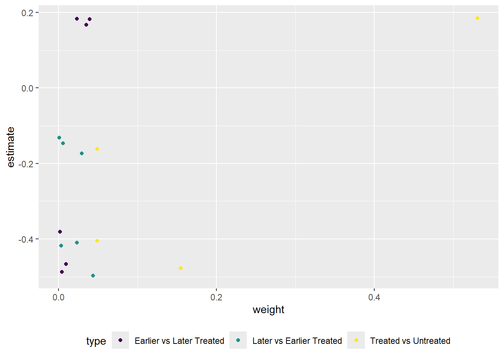
必ずしもATTと解釈できないLater vs Earlier Treatedの推定が負の値を取り、この不適切な比較に加重が与えられることによって、母集団におけるATTの期間平均0.0320154と大きく乖離した推計となっている。
4.修正TWFE推定
処置時点での層別を適切に行った、処置を受け始めるタイミングのグループと処置期間の時点について飽和した回帰（処置タイミングのコーホートダミー、時点ダミー、それらの処置時点に対応する交差項をすべて入れた回帰）を行う。
※回帰の詳細、フォーミュラについては参照サイトを参照。
df_design_multiperiod_observed$z_it_t <-
df_design_multiperiod_observed$z_it *
df_design_multiperiod_observed$time +
df_design_multiperiod_observed$z_it *
df_design_multiperiod_observed$group_i * 100
df_design_multiperiod_observed <-
fastDummies::dummy_cols(
df_design_multiperiod_observed,
select_columns = "z_it_t"
)
df_design_multiperiod_observed <-
df_design_multiperiod_observed %>%
dplyr::select(-"z_it_t_0")
fml <- as.formula(
paste("y_it ~ ",
paste(grep(
"z_it_t_",
names(df_design_multiperiod_observed),
value = TRUE
),
collapse = "+"))
)
lsdv <-
plm::plm(
formula = fml,
data = df_design_multiperiod_observed,
index = c("id", "time"),
effect = "twoways"
)
clubSandwich::coef_test(
lsdv,
vcov = "CR1",
cluster = "id",
test = "naive-t"
) %>%
kbl() %>%
kable_styling()| Coef | beta | SE | tstat | df_t | p_t | |
|---|---|---|---|---|---|---|
| z_it_t_505 | z_it_t_505 | 0.1702083 | 0.0065098 | 26.146397 | 999 | 0 |
| z_it_t_506 | z_it_t_506 | 0.1884960 | 0.0071110 | 26.507568 | 999 | 0 |
| z_it_t_507 | z_it_t_507 | 0.1752558 | 0.0066062 | 26.529012 | 999 | 0 |
| z_it_t_508 | z_it_t_508 | 0.1805536 | 0.0066972 | 26.959717 | 999 | 0 |
| z_it_t_509 | z_it_t_509 | 0.1908563 | 0.0071104 | 26.841821 | 999 | 0 |
| z_it_t_510 | z_it_t_510 | 0.2040676 | 0.0076521 | 26.668243 | 999 | 0 |
| z_it_t_606 | z_it_t_606 | -0.4877827 | 0.0276891 | -17.616430 | 999 | 0 |
| z_it_t_607 | z_it_t_607 | -0.4498325 | 0.0263777 | -17.053534 | 999 | 0 |
| z_it_t_608 | z_it_t_608 | -0.4513963 | 0.0258310 | -17.474996 | 999 | 0 |
| z_it_t_609 | z_it_t_609 | -0.4796776 | 0.0276876 | -17.324606 | 999 | 0 |
| z_it_t_610 | z_it_t_610 | -0.5157074 | 0.0298698 | -17.265159 | 999 | 0 |
| z_it_t_707 | z_it_t_707 | -0.3842658 | 0.0379974 | -10.112948 | 999 | 0 |
| z_it_t_708 | z_it_t_708 | -0.3773633 | 0.0375526 | -10.048919 | 999 | 0 |
| z_it_t_709 | z_it_t_709 | -0.4122213 | 0.0404317 | -10.195493 | 999 | 0 |
| z_it_t_710 | z_it_t_710 | -0.4433033 | 0.0430448 | -10.298653 | 999 | 0 |
| z_it_t_808 | z_it_t_808 | -0.1522525 | 0.0163056 | -9.337447 | 999 | 0 |
| z_it_t_809 | z_it_t_809 | -0.1592979 | 0.0182895 | -8.709789 | 999 | 0 |
| z_it_t_810 | z_it_t_810 | -0.1727879 | 0.0188303 | -9.176053 | 999 | 0 |
得られた係数について、処置タイミングのグループごとに集計。
df_compare <-
tibble::tibble(
group_i = c(5, 6, 7, 8),
did_lsdv =
c(
mean(lsdv$coefficients[grep("z_it_t_5", names(lsdv$coefficients), value = TRUE)], na.rm = TRUE),
mean(lsdv$coefficients[grep("z_it_t_6", names(lsdv$coefficients), value = TRUE)], na.rm = TRUE),
mean(lsdv$coefficients[grep("z_it_t_7", names(lsdv$coefficients), value = TRUE)], na.rm = TRUE),
mean(lsdv$coefficients[grep("z_it_t_8", names(lsdv$coefficients), value = TRUE)], na.rm = TRUE)
),
did_dif = trend_treated$trend_treated - trend_control$trend_control[,1]
)
df_compare %>%
kbl() %>%
kable_styling()| group_i | did_lsdv | did_dif |
|---|---|---|
| 5 | 0.1849063 | 0.1846163 |
| 6 | -0.4768793 | -0.4777081 |
| 7 | -0.4042885 | -0.4050334 |
| 8 | -0.1614461 | -0.1628867 |
これらの値の加重平均を取ると、差の差法推定の推定値did_dif_averageとおおむね一致する推定値を得る。（ただし、修正TWFE推定の回帰には、never-treatedのみならず、not-yet-treatedとの比較も一部含まれるため厳密には一致しない）
df_compare$proportion <-
df_did$proportion
df_compare %>%
dplyr::summarise(
did_lsdv_average = sum(did_lsdv * proportion),
did_dif_average = sum(did_dif[,1] * proportion)
) %>%
kbl() %>%
kable_styling()| did_lsdv_average | did_dif_average |
|---|---|
| 0.0299517 | 0.0295028 |
参照：因果推論の計量経済学（川口、澤田）：第9章 差の差法の基礎
処置群の数が限られる場合における手法としての合成コントロール法を、tidysynthパッケージを使い実装する。
分析にはtidysynthパッケージに含まれる、smokingデータを使う。
data(
"smoking",
package = "tidysynth"
)
smoking %>%
summary() state year cigsale lnincome
Length:1209 Min. :1970 Min. : 40.7 Min. : 9.397
Class :character 1st Qu.:1977 1st Qu.:100.9 1st Qu.: 9.739
Mode :character Median :1985 Median :116.3 Median : 9.861
Mean :1985 Mean :118.9 Mean : 9.862
3rd Qu.:1993 3rd Qu.:130.5 3rd Qu.: 9.973
Max. :2000 Max. :296.2 Max. :10.487
NA's :195
beer age15to24 retprice
Min. : 2.50 Min. :0.1294 Min. : 27.3
1st Qu.:20.90 1st Qu.:0.1658 1st Qu.: 50.0
Median :23.30 Median :0.1781 Median : 95.5
Mean :23.43 Mean :0.1755 Mean :108.3
3rd Qu.:25.10 3rd Qu.:0.1867 3rd Qu.:158.4
Max. :40.40 Max. :0.2037 Max. :351.2
NA's :663 NA's :390 仮想的な処置タイミングと処置群の設定。
year_start <- 1988
name_treated <- "California"
year_init <- min(smoking$year)
year_end <- max(smoking$year)
total_years <- year_end - year_init# 切片項
alpha0_retprice <- 35
alpha0_cigsale <- 140
# 時間効果パラメータ
delta_mean <- 0
delta_sd <- 2
# ファクターのパラメータ
mu_mean <- 0
mu_sd <- 2cigsaleを減らす処置効果を決定するパラメータ
te_unif_lower <- 0.05
te_unif_upper <- 0.1自己回帰モデルのパラメータ
# 誤差項分布パラメータ
eta_mean <- 0
eta_sd <- 3
# 自己回帰係数パラメータ
rho <- -0.1
rho_zy <- 0.01
rho_zz <- 0.5
rho_yy <- 0.5合成コントロール法で合わせる期間の設定
# 使用する共変量と顕在結果の時点の設定
window_income_age <- 1980:1988
window_beer <- 1984:1988
window_cigsale1 <- 1975
window_cigsale2 <- 1980
window_cigsale3 <- 1988
# ウェイトの計算に用いる期間の設定
window_fit <- 1970:1988最適化にあたって使用する、二次計画ソルバーに渡すチューニングパラメータの設定。
margin_ipop <- 0.02
sigf_ipop <- 7
bound_ipop <- 6set.seed(1)ファクターモデル：処置効果がないケース
retpriceとcigsaleが以下の位置変量ファクターモデルで生成でされていると想定。 共に平均0の乱数で生成し、処置効果が無い設定とする。
\[ Y_{it} = \alpha_0 + \delta_t + \lambda_t \mu_i + \epsilon_{it} \]
smoking_fake_factor_no_effect <-
smoking %>%
dplyr::group_by(state) %>%
dplyr::mutate(
mu_i_retprice =
rnorm(n = 1,
mean = mu_mean,
sd = mu_sd),
mu_i_cisale =
rnorm(n = 1,
mean = mu_mean,
sd = mu_sd)
) %>%
dplyr::ungroup() %>%
dplyr::group_by(year) %>%
dplyr::mutate(
retprice =
alpha0_retprice + # 切片$\alpha_0$
rnorm(n = 1,
mean = delta_mean,
sd = delta_sd) + # $delta_t$
runif(n = 1) * mu_i_retprice + # $\lambda_t \mu_i
rnorm(n = length(state)), # $\eplison_{it}$
cigsale =
alpha0_cigsale +
rnorm(n = 1,
mean = delta_mean,
sd = delta_sd) +
runif(n = 1) * mu_i_cisale +
rnorm(n = length(state))
) %>%
dplyr::ungroup() %>%
dplyr::select(
-mu_i_retprice,
-mu_i_cisale
)ファクターモデル：処置効果があるケース
カリフォルニアでは処置期以降に販売量が減少する状況を想定したデータを生成。
smoking_fake_factor_some_effect <-
smoking %>%
dplyr::group_by(state) %>%
dplyr::mutate(
mu_i_retprice =
rnorm(n = 1,
mean = mu_mean,
sd = mu_sd),
mu_i_cigsale =
rnorm(n = 1,
mean = mu_mean,
sd = mu_sd)
) %>%
dplyr::ungroup() %>%
dplyr::group_by(year) %>%
dplyr::mutate(
retprice =
alpha0_retprice + # 切片$\alpha_0$
rnorm(n = 1,
mean = delta_mean,
sd = delta_sd) + # $delta_t$
runif(n = 1) * mu_i_retprice + # $\lambda_t \mu_i
rnorm(n = length(state)), # $\eplison_{it}$
cigsale =
alpha0_cigsale +
rnorm(n = 1,
mean = delta_mean,
sd = delta_sd) +
runif(n = 1) * mu_i_cigsale +
rnorm(n = length(state))
) %>%
dplyr::ungroup() %>%
dplyr::select(
-mu_i_retprice,
-mu_i_cigsale
) %>%
dplyr::mutate(
cigsale =
ifelse(
state == name_treated & year > year_start,
cigsale * (
1 - runif(n = 1,
te_unif_lower,
te_unif_upper)
),
cigsale
)
)自己回帰モデル：処置効果がないケース
時間を通じて一定の自己回帰係数\(\rho_{zz}\)と\(\rho_{yy}\)を持つ自己回帰モデルを想定したデータの生成。（モデルの詳細は参照サイトを参照）
※なお、参照サイトではyear_startをyear_init + 10と計算しているが、定義上のyear_startと一致しない。このようになっている理由は不明だが、以下では参照サイトの計算式に従う。
smoking_fake <- smoking
years <- unique(smoking_fake$year)
smoking_fake$retprice[smoking_fake$year == 1] <-
alpha0_retprice +
rnorm(
n = sum(smoking_fake$year == 1),
mean = eta_mean,
sd = eta_sd
)
smoking_fake$cigsale[smoking_fake$year == 1] <-
alpha0_cigsale +
rho * smoking_fake$retprice[smoking_fake$year == 1] +
rnorm(
n = sum(smoking_fake$year == 1),
mean = eta_mean,
sd = eta_sd
)
for (
t in years[2:length(years)]
) {
smoking_fake$retprice[smoking_fake$year == t] <-
alpha0_retprice +
rho_zy*(
(t - (year_init + 10)) / total_years
)^2 * smoking_fake$cigsale[smoking_fake$year == t - 1] +
rho_zz * (
(t - year_init) / total_years
) * smoking_fake$retprice[smoking_fake$year == t - 1] +
rnorm(
n = sum(smoking_fake$year == t),
mean = eta_mean,
sd = eta_sd
)
smoking_fake$cigsale[smoking_fake$year == t] <-
alpha0_cigsale +
rho * smoking_fake$retprice[smoking_fake$year == t] +
rho_yy * (
(t - year_init) / total_years
)^2 * smoking_fake$cigsale[smoking_fake$year == t - 1] +
rnorm(
n = sum(smoking_fake$year == t),
mean = eta_mean,
sd = eta_sd
)
}
smoking_fake_ar_no_effect <- smoking_fake自己回帰モデル：処置効果があるケース
処置群のみ、処置発生の翌年以降、毎年比例的に減少する場合のデータを生成。
smoking_fake <- smoking
years <- unique(smoking_fake$year)
smoking_fake$retprice[smoking_fake$year == 1] <-
alpha0_retprice +
rnorm(
n = sum(smoking_fake$year == 1),
mean = eta_mean,
sd = eta_sd
)
smoking_fake$cigsale[smoking_fake$year == 1] <-
alpha0_cigsale +
rho * smoking_fake$retprice[smoking_fake$year == 1] +
rnorm(
n = sum(smoking_fake$year == 1),
mean = eta_mean,
sd = eta_sd
)
for (
t in years[2:length(years)]
) {
smoking_fake$retprice[smoking_fake$year == t] <-
alpha0_retprice +
rho_zy*((t - (year_init+10))/total_years)^2 *
smoking_fake$cigsale[smoking_fake$year == t - 1] +
rho_zz* ((t - year_init)/total_years) *
smoking_fake$retprice[smoking_fake$year == t - 1] +
rnorm(
n = sum(smoking_fake$year == t),
mean = eta_mean,
sd = eta_sd
)
smoking_fake$cigsale[smoking_fake$year == t] <-
alpha0_cigsale +
rho * smoking_fake$retprice[smoking_fake$year == t] +
rho_yy * ((t - year_init)/total_years)^2 *
smoking_fake$cigsale[smoking_fake$year == t - 1] +
rnorm(
n = sum(smoking_fake$year == t),
mean = eta_mean,
sd = eta_sd
)
smoking_fake$cigsale[smoking_fake$year == t &
smoking_fake$state == 'California'] <-
smoking_fake$cigsale[smoking_fake$year == t &
smoking_fake$state == 'California'] * (
1 -
runif(
n = 1,
te_unif_lower,
te_unif_upper
) * (
t > year_start
)
)
}
smoking_fake_ar_some_effect <- smoking_fake関数の設定内容の詳細は参照サイトを参照。（以下、事前に定義した変数の再掲）
# 合成コントロール法で合わせる期間の設定
# ・使用する共変量と顕在結果の時点の設定
# window_income_age <- 1980:1988
# window_beer <- 1984:1988
# # window_cigsale1 <- 1975
# # window_cigsale2 <- 1980
# # window_cigsale3 <- 1988
# ・ウェイトの計算に用いる期間の設定
# window_fit <- 1970:1988
# 最適化にあたって使用する、二次計画ソルバーに渡すチューニングパラメータの設定。
# margin_ipop <- 0.02
# sigf_ipop <- 7
# bound_ipop <- 6smoking_out_factor_noeffect <-
smoking_fake_factor_no_effect %>%
tidysynth::synthetic_control(
outcome = cigsale,
unit = state,
time = year,
i_unit = name_treated,
i_time = year_start,
generate_placebos = TRUE
) %>%
tidysynth::generate_predictor(
time_window = window_income_age,
lnincome = mean(lnincome, na.rm = TRUE),
youth = mean(age15to24, na.rm = TRUE)
) %>%
tidysynth::generate_predictor(
time_window = window_beer,
beer_sales = mean(beer, na.rm = TRUE)
) %>%
tidysynth::generate_predictor(
time_window = window_cigsale1,
cigsale1 = cigsale
) %>%
tidysynth::generate_predictor(
time_window = window_cigsale2,
cigsale2 = cigsale
) %>%
tidysynth::generate_predictor(
time_window = window_cigsale3,
cigsale3 = cigsale
) %>%
tidysynth::generate_weights(
optimization_window = window_fit,
margin_ipop = margin_ipop,
sigf_ipop = sigf_ipop,
bound_ipop = bound_ipop
) %>%
tidysynth::generate_control()推定結果の表示
plot_trendsで、合成コントロール系列と観測系列を比較するプロットを生成。
smoking_out_factor_noeffect %>%
tidysynth::plot_trends()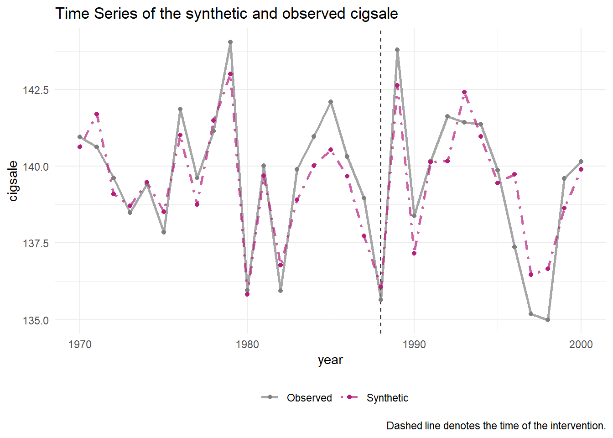
plot_differencesで、それらを差分として表示。
smoking_out_factor_noeffect %>%
tidysynth::plot_differences()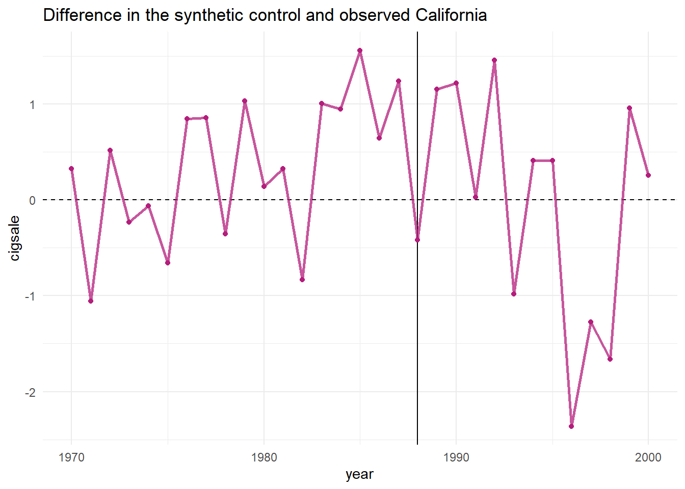
plot_weightsで、どの統制群とどの変数が予測に寄与しているかを表示。
smoking_out_factor_noeffect %>%
tidysynth::plot_weights()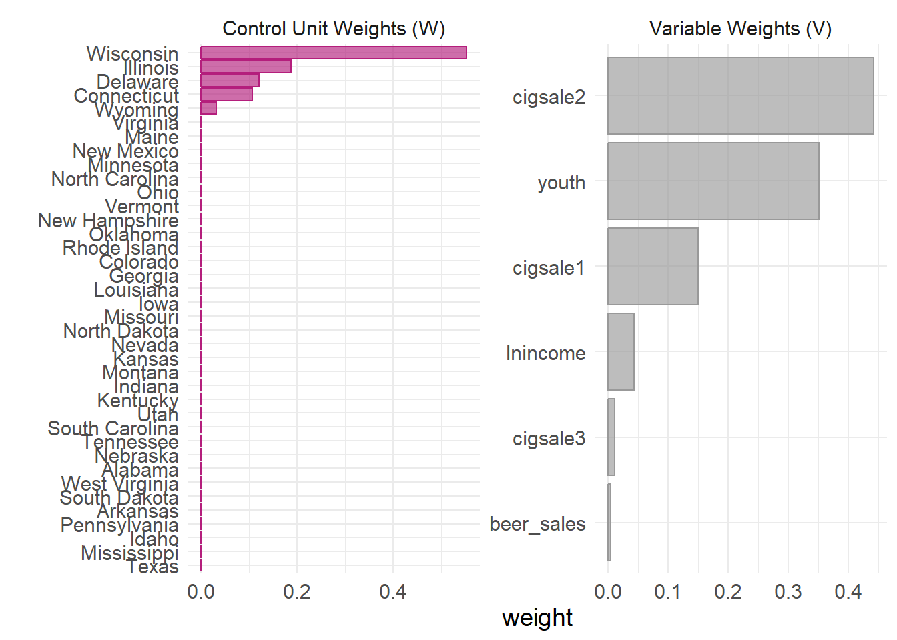
grab_balance_tableで、予測に用いた変数の合成コントロールと実際の観測における類似の程度を表示。
smoking_out_factor_noeffect %>%
tidysynth::grab_balance_table() %>%
kbl() %>%
kable_styling()| variable | California | synthetic_California | donor_sample |
|---|---|---|---|
| lnincome | 10.0765586 | 9.9507206 | 9.8291968 |
| youth | 0.1735324 | 0.1730182 | 0.1725101 |
| beer_sales | 24.2800003 | 28.5184480 | 23.6552632 |
| cigsale1 | 137.8555014 | 138.5129916 | 140.0848534 |
| cigsale2 | 135.9694223 | 135.8295657 | 136.4325736 |
| cigsale3 | 135.6485199 | 136.0652810 | 135.9853657 |
プラセボ分析と推測統計
推計においてgenerate_placebosをTRUEにすることで、統制群の各個体についても同様のウェイトが計算され、plot_placebosで全個体に対する予測と合成コントロール予測を可視化できる。
smoking_out_factor_noeffect %>%
tidysynth::plot_placebos()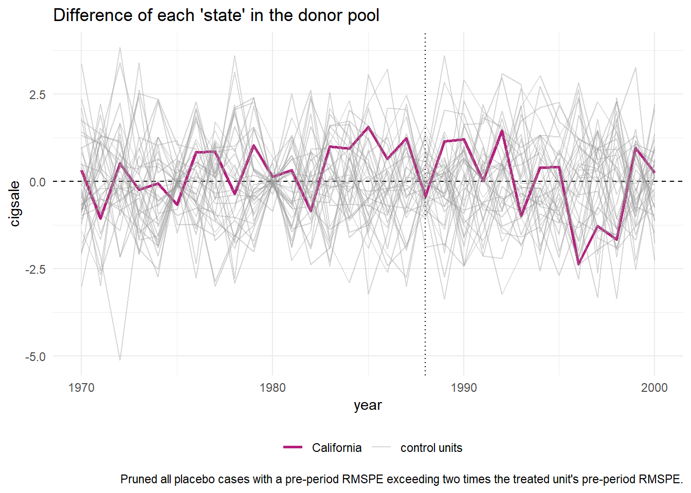
prune = FALSEとすることで、（予測がうまくいかず）自動で排除されていた個体も含む全ての個体を表示。
smoking_out_factor_noeffect %>%
tidysynth::plot_placebos(
prune = FALSE
)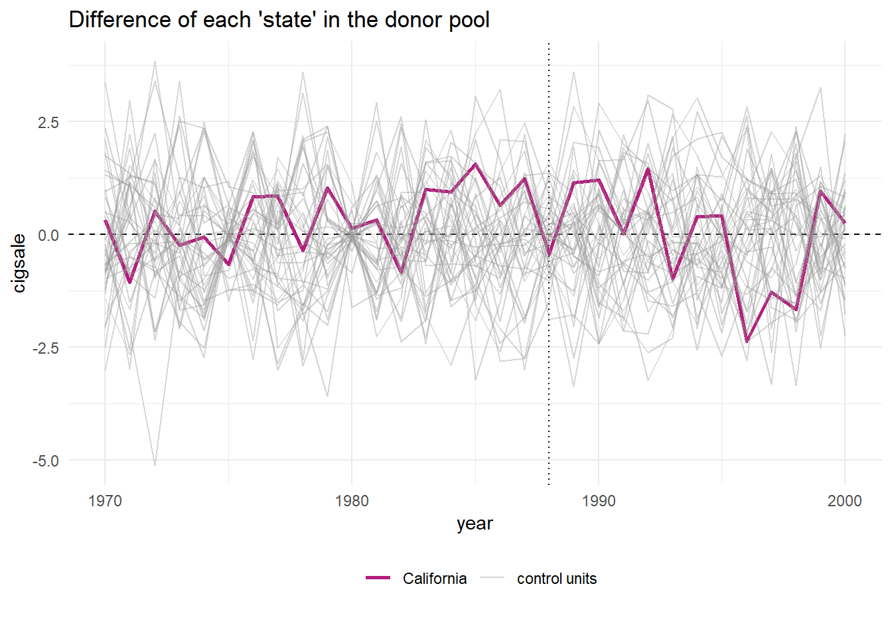
plot_mspe_ratioで、統制群のプラセボ予測誤差に比べて、処置群の予測誤差が 何番目に大きいかを表示。
smoking_out_factor_noeffect %>%
tidysynth::plot_mspe_ratio()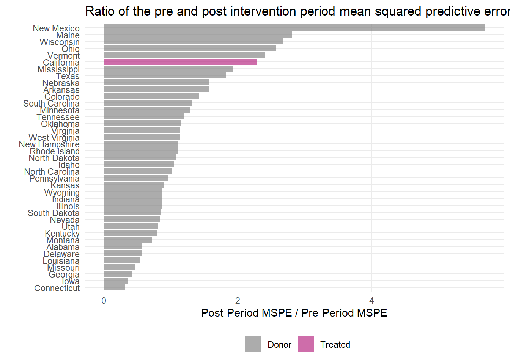
grab_significanceで、処置個体と他の全てのプラセボ個体が同じ予測誤差を持っている場合の帰無仮説において、特定の順位が生じる確率がfishers_exac_pvalueとして得られる。
smoking_out_factor_noeffect %>%
tidysynth::grab_significance() %>%
head(10) %>%
kbl() %>%
kable_styling()| unit_name | type | pre_mspe | post_mspe | mspe_ratio | rank | fishers_exact_pvalue | z_score |
|---|---|---|---|---|---|---|---|
| New Mexico | Donor | 0.6187232 | 3.520239 | 5.689521 | 1 | 0.0256410 | 4.5340434 |
| Maine | Donor | 0.5947365 | 1.670436 | 2.808699 | 2 | 0.0512821 | 1.5525712 |
| Wisconsin | Donor | 0.5834910 | 1.563416 | 2.679417 | 3 | 0.0769231 | 1.4187727 |
| Ohio | Donor | 0.8438535 | 2.164614 | 2.565154 | 4 | 0.1025641 | 1.3005173 |
| Vermont | Donor | 0.5580264 | 1.338843 | 2.399247 | 5 | 0.1282051 | 1.1288134 |
| California | Treated | 0.6267683 | 1.432582 | 2.285664 | 6 | 0.1538462 | 1.0112624 |
| Mississippi | Donor | 2.0235407 | 3.908860 | 1.931693 | 7 | 0.1794872 | 0.6449247 |
| Texas | Donor | 1.5215707 | 2.776115 | 1.824506 | 8 | 0.2051282 | 0.5339924 |
| Nebraska | Donor | 1.1685162 | 1.842674 | 1.576935 | 9 | 0.2307692 | 0.2777719 |
| Arkansas | Donor | 1.4714305 | 2.305012 | 1.566511 | 10 | 0.2564103 | 0.2669838 |
6番目に大きいCaliforniaのp_valueは0.1538で、処置効果があるとは言えない結果となっている。
以上の手続きを関数化したもの↓
smoking_out_factor_noeffect_check <-
CausalInferenceTextbook::call_synthetic_control(
data = smoking_fake_factor_no_effect,
name_treated = name_treated,
year_start = year_start,
window_income_age = window_income_age,
window_beer = window_beer,
window_cigsale1 = window_cigsale1,
window_cigsale2 = window_cigsale2,
window_cigsale3 = window_cigsale3,
margin_ipop = margin_ipop,
sigf_ipop = sigf_ipop,
bound_ipop = bound_ipop
)推定結果の一致を確認。
smoking_out_factor_noeffect_check %>%
tidysynth::grab_balance_table() %>%
kbl() %>%
kable_styling()| variable | California | synthetic_California | donor_sample |
|---|---|---|---|
| ln_income | 10.0765586 | 9.9507206 | 9.8291968 |
| youth | 0.1735324 | 0.1730182 | 0.1725101 |
| beer_sales | 24.2800003 | 28.5184480 | 23.6552632 |
| cigsale_1 | 137.8555014 | 138.5129916 | 140.0848534 |
| cigsale_2 | 135.9694223 | 135.8295657 | 136.4325736 |
| cigsale_3 | 135.6485199 | 136.0652810 | 135.9853657 |
smoking_out_factor_noeffect_check %>%
tidysynth::grab_significance() %>%
head(10) %>%
kbl() %>%
kable_styling()| unit_name | type | pre_mspe | post_mspe | mspe_ratio | rank | fishers_exact_pvalue | z_score |
|---|---|---|---|---|---|---|---|
| New Mexico | Donor | 0.6187232 | 3.520239 | 5.689521 | 1 | 0.0256410 | 4.5340434 |
| Maine | Donor | 0.5947365 | 1.670436 | 2.808699 | 2 | 0.0512821 | 1.5525712 |
| Wisconsin | Donor | 0.5834910 | 1.563416 | 2.679417 | 3 | 0.0769231 | 1.4187727 |
| Ohio | Donor | 0.8438535 | 2.164614 | 2.565154 | 4 | 0.1025641 | 1.3005173 |
| Vermont | Donor | 0.5580264 | 1.338843 | 2.399247 | 5 | 0.1282051 | 1.1288134 |
| California | Treated | 0.6267683 | 1.432582 | 2.285664 | 6 | 0.1538462 | 1.0112624 |
| Mississippi | Donor | 2.0235407 | 3.908860 | 1.931693 | 7 | 0.1794872 | 0.6449247 |
| Texas | Donor | 1.5215707 | 2.776115 | 1.824506 | 8 | 0.2051282 | 0.5339924 |
| Nebraska | Donor | 1.1685162 | 1.842674 | 1.576935 | 9 | 0.2307692 | 0.2777719 |
| Arkansas | Donor | 1.4714305 | 2.305012 | 1.566511 | 10 | 0.2564103 | 0.2669838 |
smoking_out_some_effect <-
CausalInferenceTextbook::call_synthetic_control(
data = smoking_fake_factor_some_effect,
name_treated = name_treated,
year_start = year_start,
window_income_age = window_income_age,
window_beer = window_beer,
window_cigsale1 = window_cigsale1,
window_cigsale2 = window_cigsale2,
window_cigsale3 = window_cigsale3,
margin_ipop = margin_ipop,
sigf_ipop = sigf_ipop,
bound_ipop = bound_ipop
)smoking_out_some_effect %>%
tidysynth::plot_trends()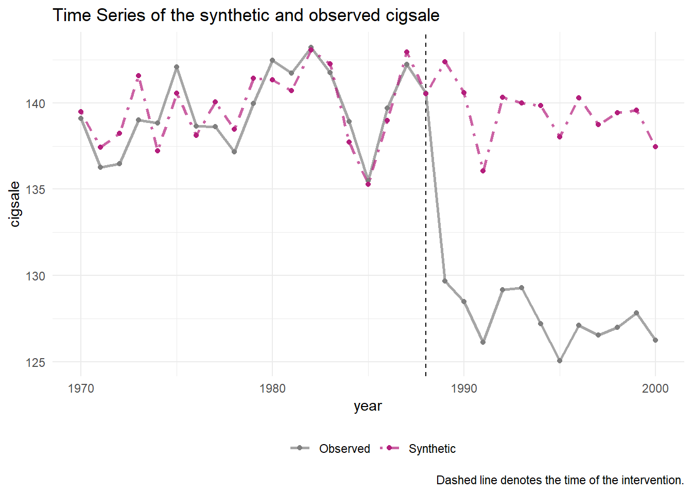
smoking_out_some_effect %>%
tidysynth::plot_placebos()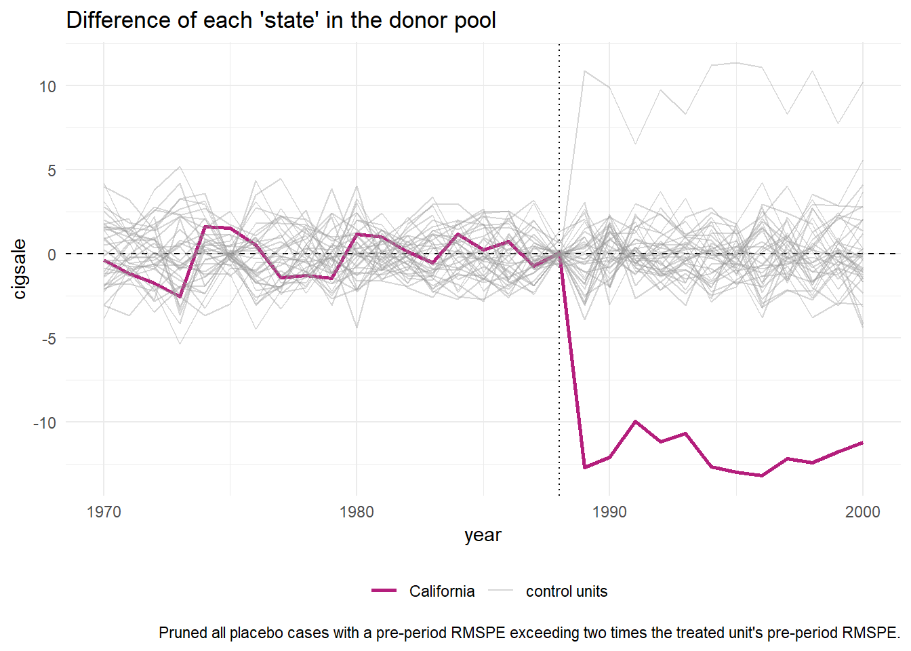
smoking_out_some_effect %>%
tidysynth::plot_mspe_ratio()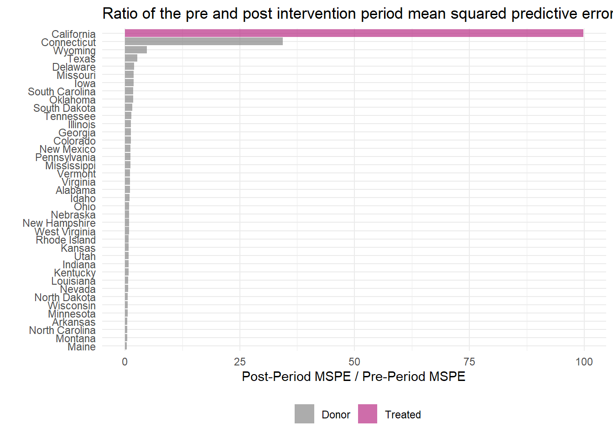
smoking_out_some_effect %>%
tidysynth::grab_significance() %>%
head(10) %>%
kbl() %>%
kable_styling()| unit_name | type | pre_mspe | post_mspe | mspe_ratio | rank | fishers_exact_pvalue | z_score |
|---|---|---|---|---|---|---|---|
| California | Treated | 1.4334040 | 143.054243 | 99.800368 | 1 | 0.0256410 | 5.7555262 |
| Connecticut | Donor | 2.7982138 | 96.288747 | 34.410789 | 2 | 0.0512821 | 1.8026246 |
| Wyoming | Donor | 0.6725591 | 3.186678 | 4.738139 | 3 | 0.0769231 | 0.0088667 |
| Texas | Donor | 0.6423494 | 1.746848 | 2.719467 | 4 | 0.1025641 | -0.1131651 |
| Delaware | Donor | 1.9539715 | 3.948555 | 2.020785 | 5 | 0.1282051 | -0.1554015 |
| Missouri | Donor | 1.5299024 | 2.926263 | 1.912712 | 6 | 0.1538462 | -0.1619347 |
| Iowa | Donor | 1.4943709 | 2.836098 | 1.897854 | 7 | 0.1794872 | -0.1628329 |
| South Carolina | Donor | 2.0733659 | 3.726453 | 1.797296 | 8 | 0.2051282 | -0.1689118 |
| Oklahoma | Donor | 0.8766306 | 1.555503 | 1.774411 | 9 | 0.2307692 | -0.1702952 |
| South Dakota | Donor | 1.5629471 | 2.540791 | 1.625641 | 10 | 0.2564103 | -0.1792886 |
smoking_out_ar_noeffect <-
CausalInferenceTextbook::call_synthetic_control(
data = smoking_fake_ar_no_effect,
name_treated = name_treated,
year_start = year_start,
window_income_age = window_income_age,
window_beer = window_beer,
window_cigsale1 = window_cigsale1,
window_cigsale2 = window_cigsale2,
window_cigsale3 = window_cigsale3,
margin_ipop = margin_ipop,
sigf_ipop = sigf_ipop,
bound_ipop = bound_ipop
)smoking_out_ar_noeffect %>%
tidysynth::plot_trends()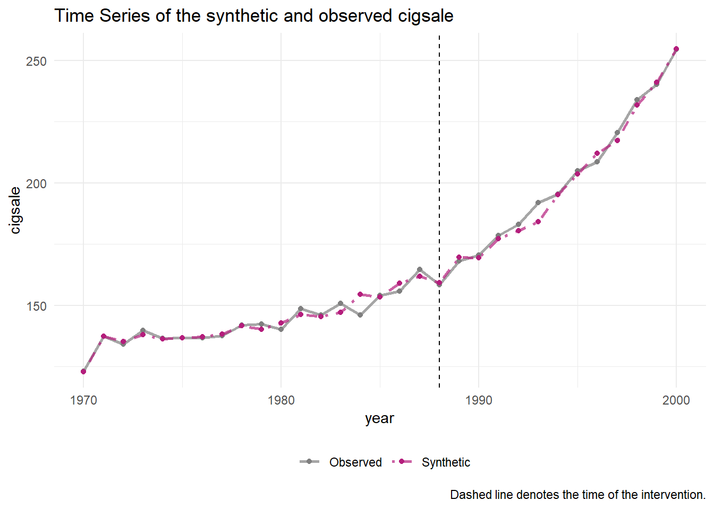
smoking_out_ar_noeffect %>%
tidysynth::plot_placebos()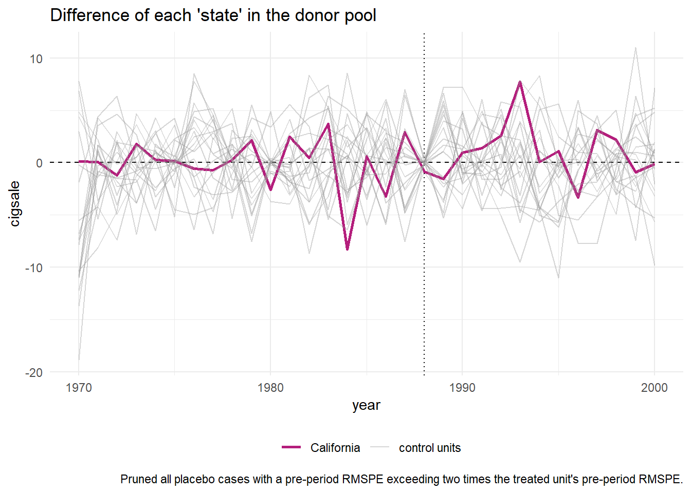
smoking_out_ar_noeffect %>%
tidysynth::plot_mspe_ratio()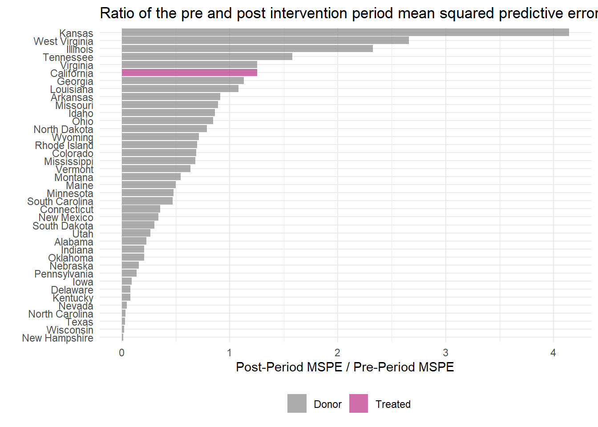
smoking_out_ar_noeffect %>%
tidysynth::grab_significance() %>%
head(10) %>%
kbl() %>%
kable_styling()| unit_name | type | pre_mspe | post_mspe | mspe_ratio | rank | fishers_exact_pvalue | z_score |
|---|---|---|---|---|---|---|---|
| Kansas | Donor | 3.780183 | 15.656657 | 4.1417726 | 1 | 0.0256410 | 4.1753404 |
| West Virginia | Donor | 9.596066 | 25.520837 | 2.6595104 | 2 | 0.0512821 | 2.3714579 |
| Illinois | Donor | 8.323906 | 19.351049 | 2.3247559 | 3 | 0.0769231 | 1.9640685 |
| Tennessee | Donor | 16.603856 | 26.226590 | 1.5795481 | 4 | 0.1025641 | 1.0571661 |
| Virginia | Donor | 11.399555 | 14.305395 | 1.2549082 | 5 | 0.1282051 | 0.6620860 |
| California | Treated | 6.602983 | 8.284861 | 1.2547149 | 6 | 0.1538462 | 0.6618507 |
| Georgia | Donor | 9.795919 | 11.062974 | 1.1293453 | 7 | 0.1794872 | 0.5092785 |
| Louisiana | Donor | 8.517692 | 9.190666 | 1.0790089 | 8 | 0.2051282 | 0.4480201 |
| Arkansas | Donor | 16.971218 | 15.502556 | 0.9134616 | 9 | 0.2307692 | 0.2465524 |
| Missouri | Donor | 10.405400 | 9.258251 | 0.8897544 | 10 | 0.2564103 | 0.2177013 |
smoking_out_ar_some_effect <-
CausalInferenceTextbook::call_synthetic_control(
data = smoking_fake_ar_some_effect,
name_treated = name_treated,
year_start = year_start,
window_income_age = window_income_age,
window_beer = window_beer,
window_cigsale1 = window_cigsale1,
window_cigsale2 = window_cigsale2,
window_cigsale3 = window_cigsale3,
margin_ipop = margin_ipop,
sigf_ipop = sigf_ipop,
bound_ipop = bound_ipop
)smoking_out_ar_some_effect %>%
tidysynth::plot_trends()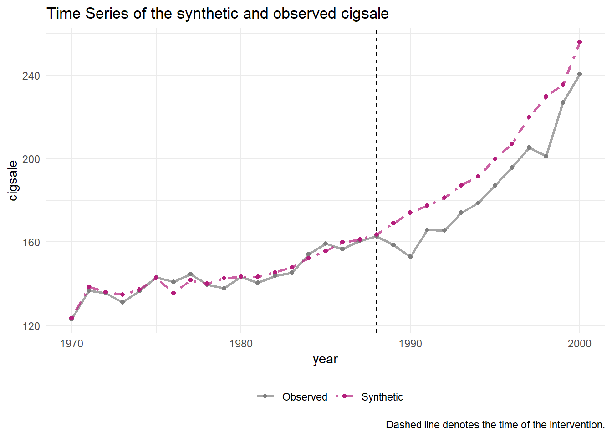
smoking_out_ar_some_effect %>%
tidysynth::plot_placebos()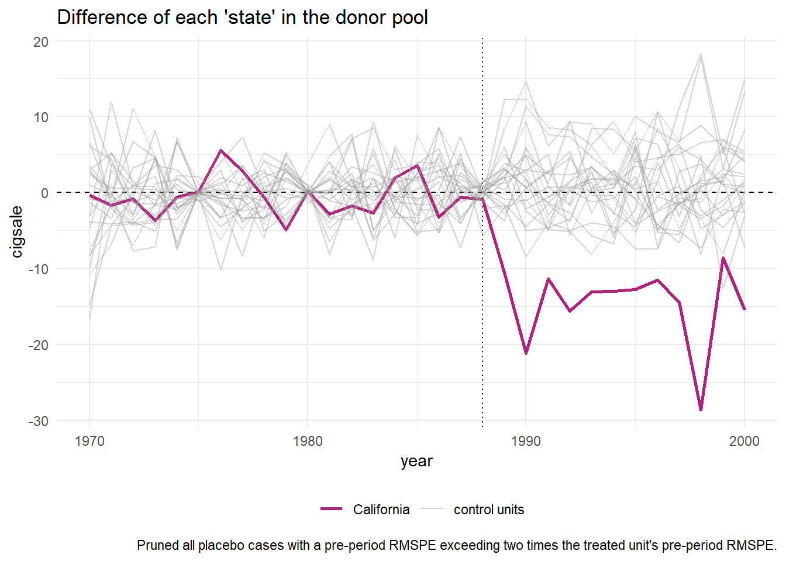
smoking_out_ar_some_effect %>%
tidysynth::plot_mspe_ratio()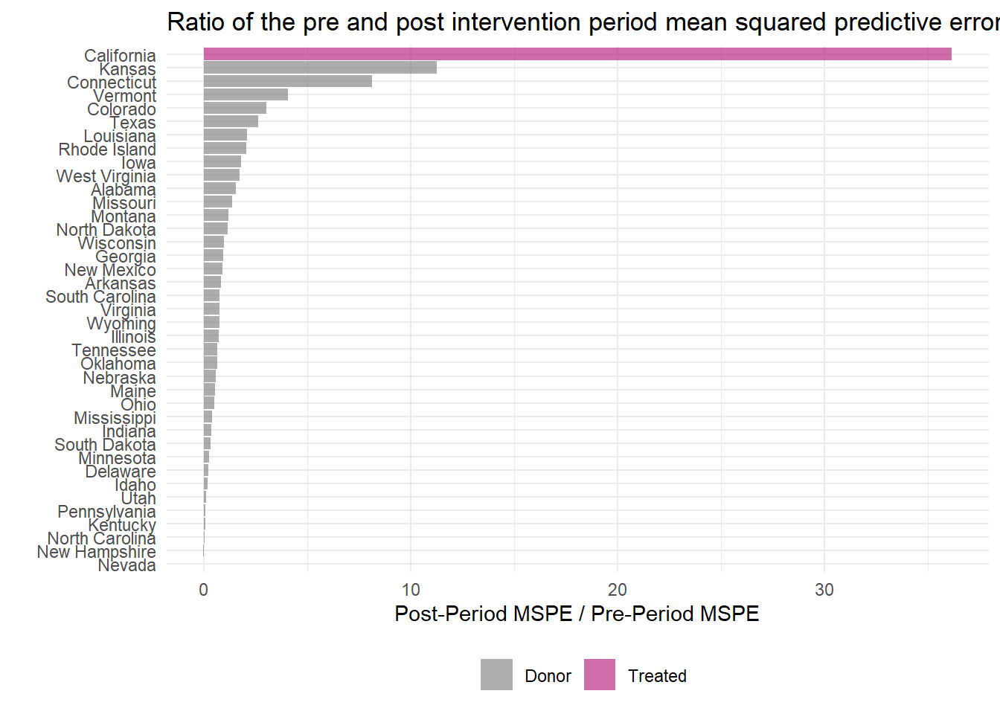
smoking_out_ar_some_effect %>%
tidysynth::grab_significance() %>%
head(10) %>%
kbl() %>%
kable_styling()| unit_name | type | pre_mspe | post_mspe | mspe_ratio | rank | fishers_exact_pvalue | z_score |
|---|---|---|---|---|---|---|---|
| California | Treated | 6.723326 | 242.99504 | 36.142089 | 1 | 0.0256410 | 5.6681645 |
| Kansas | Donor | 9.104785 | 102.50484 | 11.258348 | 2 | 0.0512821 | 1.4996386 |
| Connecticut | Donor | 10.101798 | 82.02365 | 8.119708 | 3 | 0.0769231 | 0.9738533 |
| Vermont | Donor | 15.470557 | 62.86965 | 4.063826 | 4 | 0.1025641 | 0.2944117 |
| Colorado | Donor | 10.376025 | 31.57988 | 3.043543 | 5 | 0.1282051 | 0.1234939 |
| Texas | Donor | 5.655715 | 14.81507 | 2.619486 | 6 | 0.1538462 | 0.0524558 |
| Louisiana | Donor | 10.620340 | 22.36307 | 2.105683 | 7 | 0.1794872 | -0.0336164 |
| Rhode Island | Donor | 15.695695 | 32.05287 | 2.042144 | 8 | 0.2051282 | -0.0442606 |
| Iowa | Donor | 11.573409 | 21.04892 | 1.818731 | 9 | 0.2307692 | -0.0816866 |
| West Virginia | Donor | 11.716885 | 20.41109 | 1.742023 | 10 | 0.2564103 | -0.0945368 |
引用元コピーライト表示
MIT License Copyright (c) 2020 Eric Dunford
Permission is hereby granted, free of charge, to any person obtaining a copy of this software and associated documentation files (the “Software”), to deal in the Software without restriction, including without limitation the rights to use, copy, modify, merge, publish, distribute, sublicense, and/or sell copies of the Software, and to permit persons to whom the Software is furnished to do so, subject to the following conditions:
The above copyright notice and this permission notice shall be included in all copies or substantial portions of the Software.
THE SOFTWARE IS PROVIDED “AS IS”, WITHOUT WARRANTY OF ANY KIND, EXPRESS OR IMPLIED, INCLUDING BUT NOT LIMITED TO THE WARRANTIES OF MERCHANTABILITY, FITNESS FOR A PARTICULAR PURPOSE AND NONINFRINGEMENT. IN NO EVENT SHALL THE AUTHORS OR COPYRIGHT HOLDERS BE LIABLE FOR ANY CLAIM, DAMAGES OR OTHER LIABILITY, WHETHER IN AN ACTION OF CONTRACT, TORT OR OTHERWISE, ARISING FROM, OUT OF OR IN CONNECTION WITH THE SOFTWARE OR THE USE OR OTHER DEALINGS IN THE SOFTWARE.